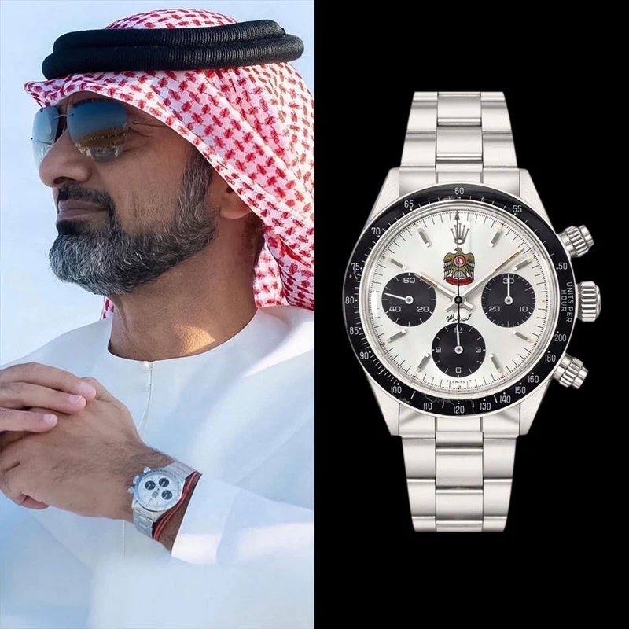
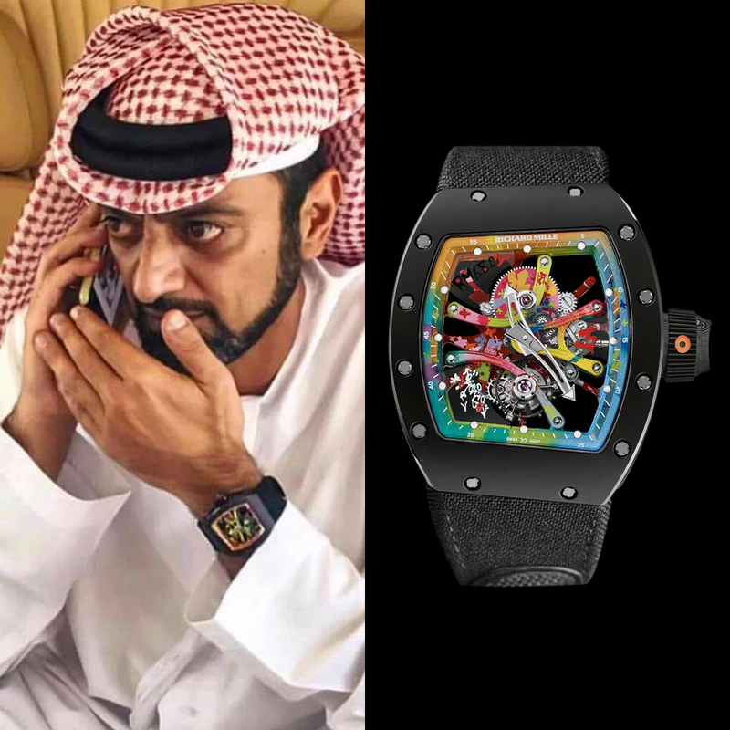
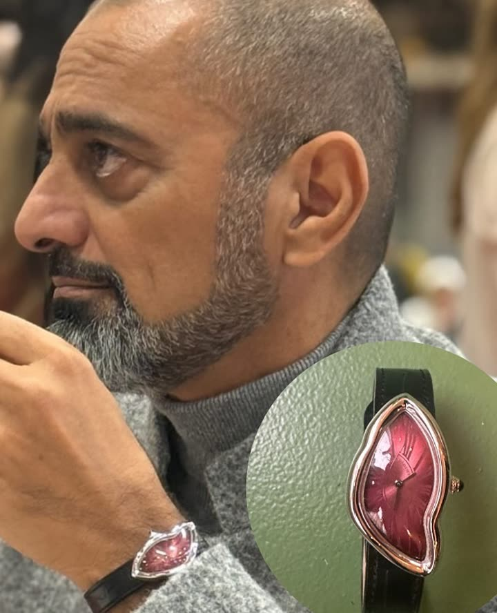

Lot I
Rolex Daytona 6263 'Quraysh'
A Daytona bearing the Quraysh hawk — commissioned for the Arabian royal courts, among the rarest of all royal Rolexes.
Open the folioHis Highness Sheikh Ammar bin Humaid Al Nuaimi · Crown Prince of Ajman
Gulf Standard Time · Live
Two-and-thirty timepieces, kept as a private majlis of time — where every dial holds a story worthy of its keeper.
The Quraysh Daytona
A hawk borne on a panda dial — made for the courts of Arabia.
Open the folioRM 68-01 Cyril Kongo
Graffiti, suspended at thirty-thousand beats an hour.
Open the folio«الوقت لا يُملك… بل يُحفظ» The Keeper's Creed · Lot I — The Quraysh Hawk

A Daytona bearing the Quraysh hawk — commissioned for the Arabian royal courts, among the rarest of all royal Rolexes.
Open the folio
One of thirty pieces worldwide — the dial graffitied by hand, one paint drop at a time, by artist Cyril Kongo.
Open the folio
Two beating hearts, synchronised by resonance alone — Journe’s answer to a problem posed in the eighteenth century.
Open the folioThirty-two pieces across eight maisons, each with its own page and provenance.
Enter the collectionThe collection that watch-spotters across the world film, study and follow.
 ▶
▶

مُهداةٌ إلى سموّ الشيخ عمّار بن حميد النعيمي — ولي عهد عجمان
Dedicated to His Highness Sheikh Ammar bin Humaid Al Nuaimi — assembled with the patience of a watchmaker and the eye of a connoisseur.